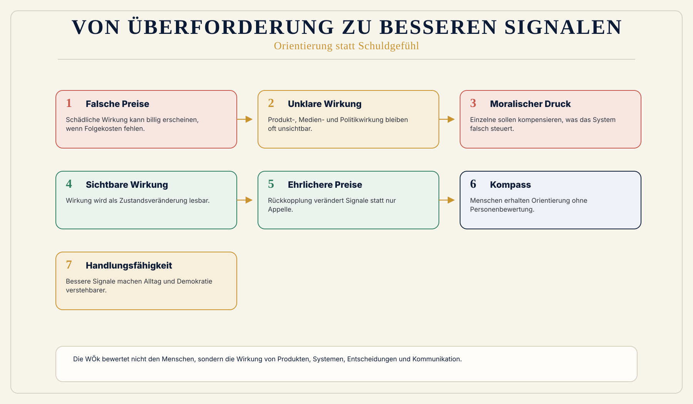

Alltag
Eine Kommune, ein Unternehmen oder ein Haushalt sieht oft zuerst Budget, Pflichten und Druck. WÖk ergänzt die Frage: Welche Wirkung entsteht dadurch?
 Wirkungsökonomie
Wirkungsökonomie
Für wen · Bürger:innen
Nicht du sollst alles allein durchprüfen. Das System muss bessere Signale senden.
Die heutige Ordnung überfordert Bürger:innen moralisch. Sie sagt: Kaufe richtig, wähle richtig, informiere dich richtig, lebe nachhaltig, erkenne Desinformation, spare Energie, verstehe Lieferketten, prüfe Quellen, rechne Preise, sortiere Krisen.
Gleichzeitig zeigen Preise, Werbung, Plattformen und politische Sprache häufig nicht, welche Wirkung wirklich entsteht.
Die Wirkungsökonomie dreht diese Überforderung um. Verantwortung wird nicht auf einzelne Menschen abgewälzt. Sie wird in Preise, Daten, Produkte, Steuern, Kapital, Medien und politische Entscheidungen zurückgeführt.
Einfach erklärt
Die Seite übersetzt Wirkungsökonomie in eine konkrete Rolle. Entscheidend ist nicht, ob jemand gut gemeint handelt, sondern welche Zustände durch Entscheidungen tatsächlich verändert werden.
Eine Kommune, ein Unternehmen oder ein Haushalt sieht oft zuerst Budget, Pflichten und Druck. WÖk ergänzt die Frage: Welche Wirkung entsteht dadurch?
Wirkung bleibt neutral. Erst der Referenzrahmen zeigt, ob eine Veränderung positiv, negativ oder ambivalent ist.
Prüfbar wird es, wenn Ziele, Datenqualität, Betroffene, Zeitraum und Rückkopplung offen genannt werden.
Warum diese Perspektive wichtig ist
Bürger:innen handeln heute in einem System voller falscher Signale. Ein schädliches Produkt kann billig sein. Ein verantwortliches Produkt kann teuer sein.
Eine Zuspitzung kann mehr Reichweite bekommen als eine gute Erklärung. Eine politische Maßnahme kann Entlastung versprechen und Folgekosten verschieben.
Dann sollen Menschen individuell richtig handeln, obwohl die Systemlogik sie in die falsche Richtung drückt.
Was heute falsch läuft
Preise lügen, wenn Wirkung fehlt.
Konsum wird moralisiert, während Wirkung unsichtbar bleibt.
Bürger:innen sollen Lieferketten, Klima, Arbeitsbedingungen, Gesundheit, Medienwirkung und Politik allein kompensieren.
Warum Reparatur nicht reicht
Moralische Appelle überfordern Menschen, wenn Preise, Werbung, Plattformen und politische Sprache weiterhin falsche Signale senden. Einzelne sollen kompensieren, was das System unsichtbar macht.
Die WÖk verschiebt Verantwortung zurück in Signale: Wirkung wird in Produkten, Preisen, Medien, Politik und Daten sichtbar, damit Alltag nicht zur Dauerprüfung wird.
WÖk-Verschiebung
Die WÖk schafft Orientierung. Wirkung wird sichtbar, bewertet und zurückgekoppelt. Produkte werden verständlicher. Schädliche Wirkung kann belastet oder riskanter werden. Positive Netto-Wirkung kann entlastet und leichter zugänglich werden.
Politische Sprache wird nicht nur auf Wahrheit, sondern auf Wirkungspotenziale geprüft. Bürger:innen werden nicht zu Überwachungssubjekten, sondern zu handlungsfähigeren Mitwirkenden.
Konkreter Gewinn
Was nicht passiert
Die WÖk erzwingt keinen perfekten Konsum.
Sie bewertet nicht den Menschen, sondern die Wirkung von Produkten, Systemen, Entscheidungen, Kommunikation und Kapitalflüssen.
Sie schafft Orientierung, nicht Bevormundung.
Wirkungspfad
Konkretes Beispiel
Ein T-Shirt kostet fünf Euro. Heute sieht der Preis aus wie ein Schnäppchen. Die Wirkung bleibt unsichtbar: Wasser, Chemie, Arbeitsbedingungen, Mikroplastik, Transport, Entsorgung. Die WÖk macht sichtbar, ob der niedrige Preis nur deshalb niedrig ist, weil Kosten ausgelagert wurden.
Visual
Links Bürger:in vor widersprüchlichen Signalen. Rechts WÖk-Kompass mit Produktwirkung, Medienwirkung, Politik, Preise. Kein Personenscoring.

Vertiefung
Die nächste Frage lautet nicht, wie diese Zielgruppe nachhaltiger wird. Sie lautet: Welche alte Steuerungslogik erzeugt das Problem, und wie verändert Wirkung die Logik selbst?
Quellenbasis / Einordnung